3. Auto Headlight : Run simulation by manual process#
Loading examples manually without usage of script.#
Make sure the simulation setup is ready to use. Follow chapter 1. Setting up Simulation Environment and Chapter 2. Auto Headlight : Configure OpenXilEnv if unsure.
Auto Headlight example will be shown in detail as procedure will be similar in loading for others as well.
Open the control panel and in process section, click on add button.
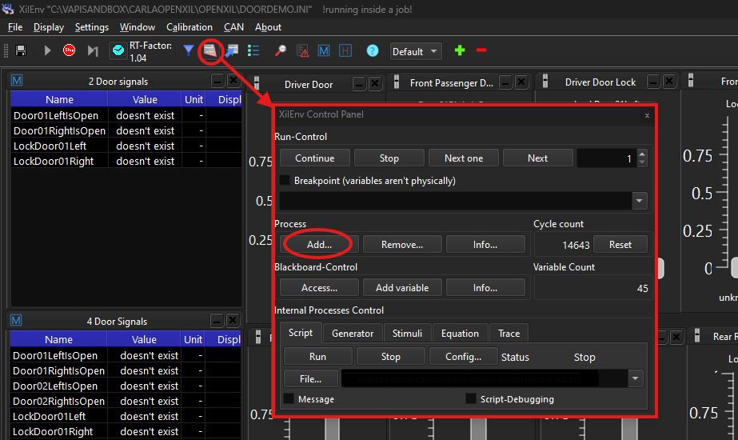
Click on “Start external process” button and browse for a FMU either Carla or VAPI example FMU.
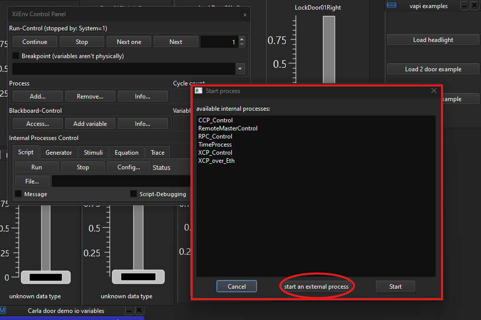
Autoheadlight fmu is loaded and user can see signals in widgets being updated.
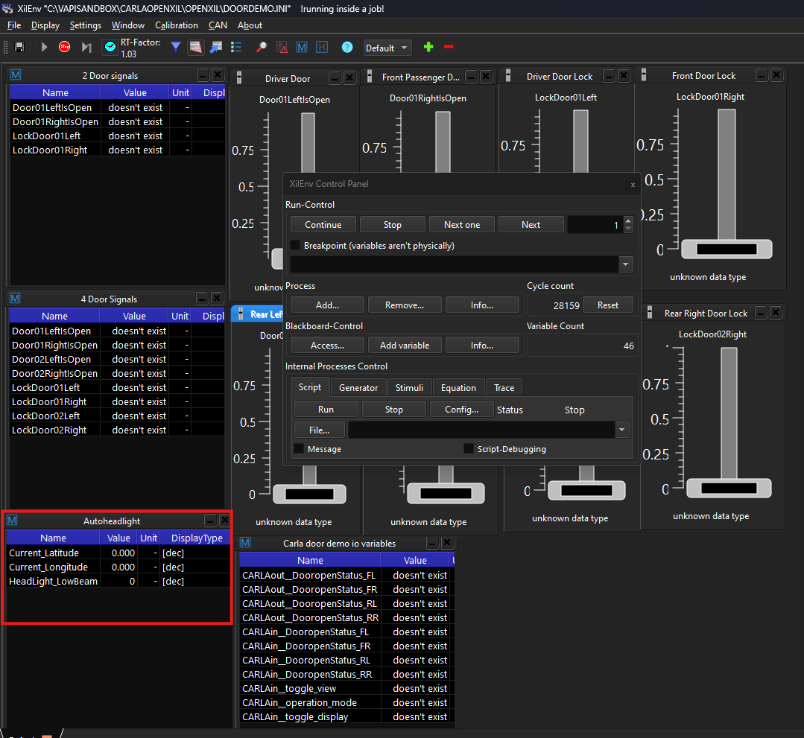
In similar way again in control panel, add an external process but now its Carla FMU. After Carla bridge is loaded, screen will look similar to the screenshot shown below.Ignore the console window. it can be placed in the background.
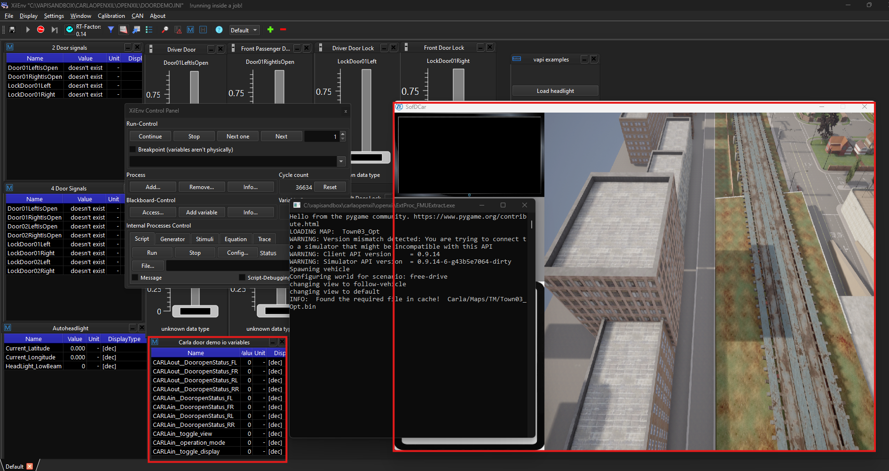
Hint
Carla FMUs for examples are located in examples\auto_headlamp_example\simulation_artifacts\
Now configure some Carla parameters in the carla io variable widget to get the correct camera placement and control.
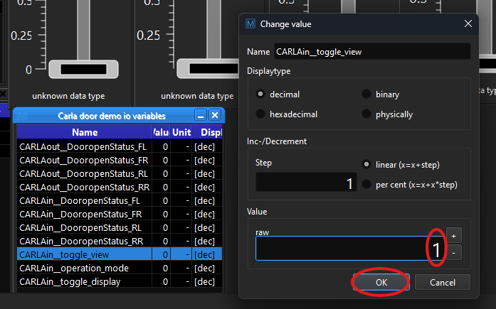
CARLAin__toggle_view = 1; second image shows the result of changing this value.
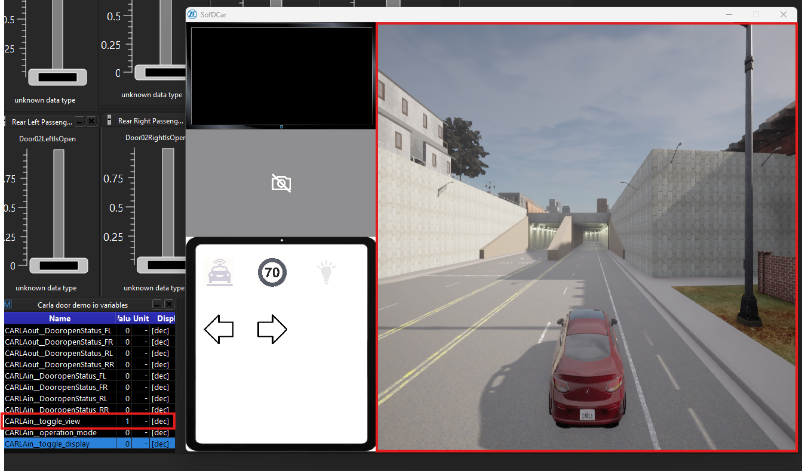
CARLAin_operation_mode = 4; This enables keyboard control of vehicle.
CARLAin_toggle_display = 1; This activates front view camera angle of vehicle will be shown as shown below.
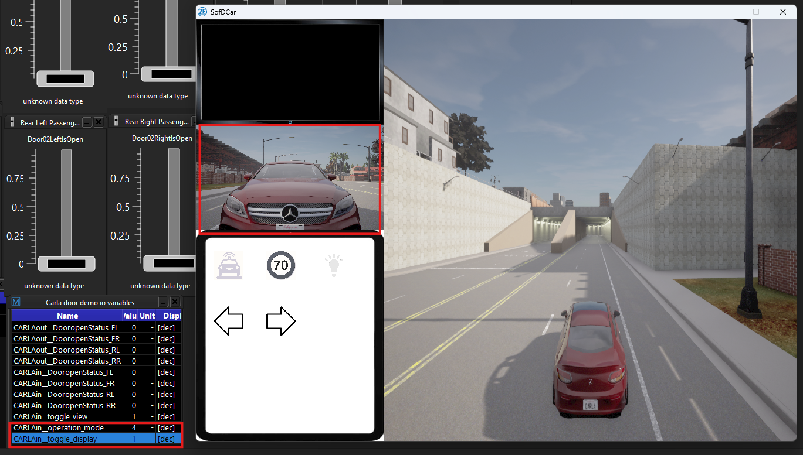
Add the trigger file in control panel’ Equation section , this trigger file has details of signals between Carla and VAPI FMU.
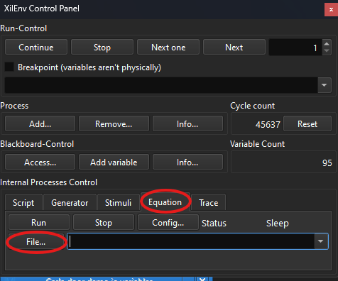
Click on file and browse for respective trigger file and then click on run to activate the trigger file.
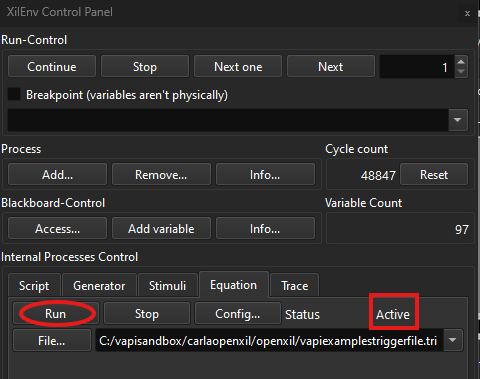
Now click on screen where the vehicle is currently being simulated, so that window context becomes active for keyboard usage. And start driving towards tunnel. As soon as vehicle enters tunnel, the headlight is switched on and as vehicle is driven outside of tunnel, headlight switches off as programmed in the vapi FMU.
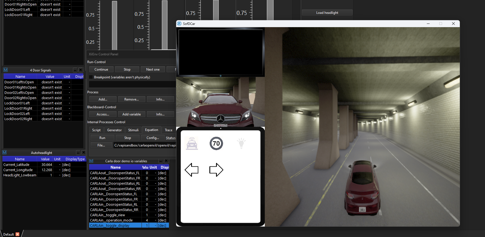
Note
- Use following keys on your keyboard to control the vehicle motion in carla environment.
“W” -> Acceleration or Gas pedal. Hold it to move continuously and leave to slow down.
“A” -> Steer Left.
“D” -> Steer Right.
“S” -> Apply Brake.
“R” -> Toggle to enable or disable reverse gear.
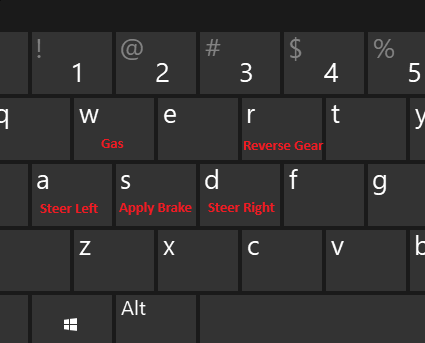
Switching between examples#
User needs to terminate the loaded external processes to load another scenario/example.
User needs to select control panel present at the right top section.
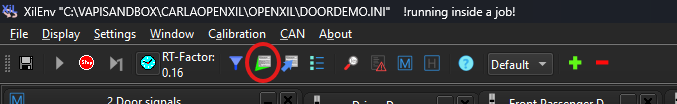
and in control panel, user needs to click on “remove” in the process section.
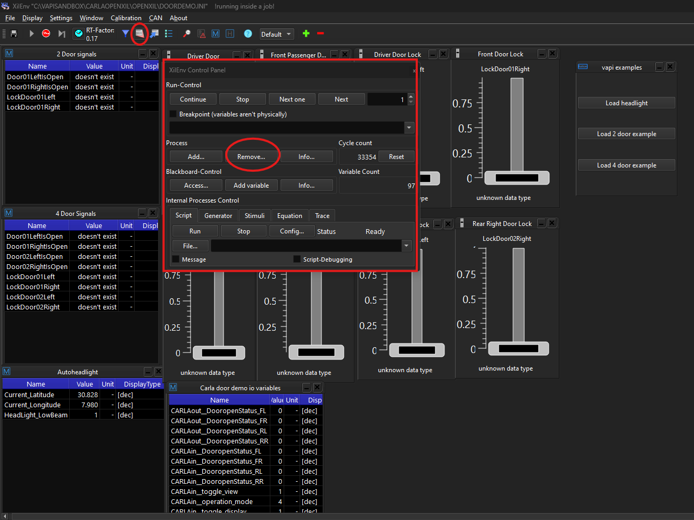
User can select multiple processes and click ok to to terminate the selected processes.
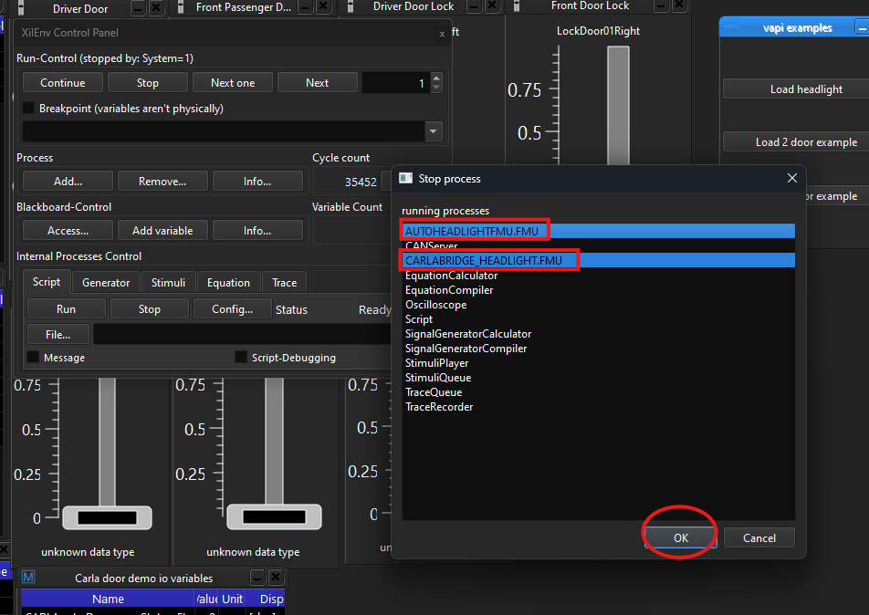
This procedure makes sure all the external FMUs are shutdown and new examples can be loaded. This process has to be followed when switching between different examples.
Simulation with Openxil , Carla and VAPI#
![@startuml
skinparam defaultFontColor black
actor "User"
participant "Carla Bridge" as CAB
participant "Openxil" as OX
box "Core Instance" #82b8b8ff
Participant "Headlight Application" as HA #00A7AB
end box
rnote over User
Set Python env
end rnote
rnote over User
Start Carla Server
end rnote
User -> OX : Start the Openxil
activate OX
rnote over OX
OpenXil started
end rnote
User -> OX : Load Headlight FMU (VAPI)
OX -> HA : Loads Headlight application
deactivate OX
activate HA
HA -> HA : Loads Core services
rnote over HA
Headlight application
loads **Core services**
and registers
following signals:
1. Current Latitude
2. Current Longitude
3. Headlight Lowbeam
end rnote
HA -> HA : Loads vehicle devices
HA -> HA : Loads basic services
HA -> HA : Loads Complex service
HA -> HA : Tunnel location is loaded
activate OX
HA-->OX : Signals value information
deactivate HA
User -> OX : Add and configure widgets
rnote over OX
widget is configured
with latitude,longitude
and headlight signals
(blackboard variables)
end rnote
rnote over OX
Widget value (blackboard
variables) is updated at
each step/cycle
end rnote
User -> OX : Load Carla Bridge Coupe version
OX -> CAB : Load Carla bridge FMU
activate CAB
rnote over CAB
Carla bridge starts
Loads Simulation
environment
end rnote
User -> OX : Load and activate trigger file
rnote over OX
Trigger file activated :
Carla and VAPI i / o
configured to each other
end rnote
User -> CAB : Move the vehicle inside the tunnel
CAB -> OX : Current Latitude and Longitude information
deactivate CAB
rnote over OX
Blackboard variables
latitude , longitude
are updated.
end rnote
OX -> HA : Current Latitude and Longitude information
activate HA
HA -> HA : Updates the Current latitude and longitude
HA -> HA : Toggle the headlight on/off based on tunnel
HA -> OX : Updated headlight information
deactivate HA
OX -> CAB : Updated Headlight information
activate CAB
CAB -> CAB : Call carla Headlight API to switch on or off
rnote over CAB
Headlight on/off based
on provided value from
VAPI via Openxil
endrnote
@enduml](../../../_images/plantuml-b6b4dd0b6f12ac3c471b3e2cc3b685d3961bf245.svg)
Carla Simulation sequence diagram#